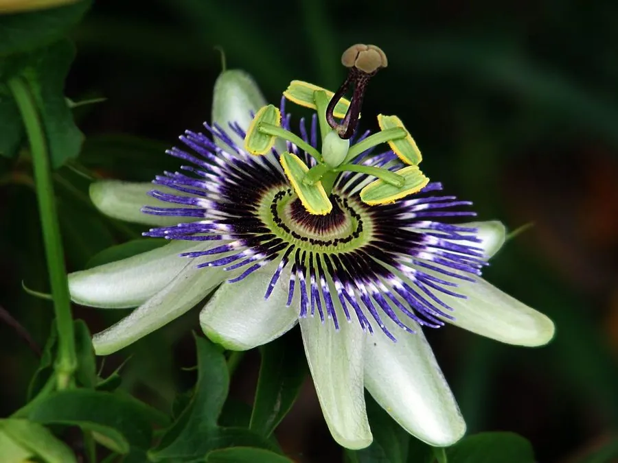

花卉与草本 · 植物界
西番莲 Passiflora caerulea

西番莲科西番莲属常绿藤本，花形奇特如钟表盘面，蓝白相间，果实橙黄可食，是著名的观赏与果树兼用植物。
- 分类
- 门被子植物门纲木兰纲目金虎尾目科西番莲科属西番莲属
- 栖息环境
- 南美亚热带林缘，喜温暖、阳光充足，不耐寒
- 地理分布
- 原产巴西、阿根廷；中国华南、西南及世界温暖地区栽培
- 保护级别
- IUCN 暂无评估；栽培广泛，部分地区归化
物种志
西番莲为常绿草质藤本，蔓长 5–10 米，茎细长，具卷须。叶片掌状 5 深裂，长 6–12 厘米，裂片披针形，边缘全缘。花单生叶腋，直径 8–10 厘米，花被片白色，副花冠由蓝紫色与白色丝状体组成，呈放射状排列，中央为雌雄蕊柱，整体形似钟表盘面；果实卵球形，成熟时橙黄色，果肉可食。
本种原产巴西、阿根廷等南美地区，喜温暖、阳光充足的环境，在中国华南、西南常作篱垣与棚架植物。它的花结构奇特，副花冠如时针刻度，因此英文称“钟表花”（clock flower）；花靠大型蜂类传粉。西番莲的果实橙黄、汁多微酸，可鲜食或制果汁；全草在民间入药，有安神之效。它不耐寒，北方需盆栽，冬季移入室内。
形态与习性
- 蔓长5–10 米，具卷须攀援
- 花期5–9 月，花蓝白相间
- 果期8–11 月，果实橙黄色
- 光照喜光，每天需充足直射光
- 水分喜湿润，生长期需充足浇水
- 土壤疏松肥沃、排水良好的壤土
- 主要用途棚架观赏、篱垣绿化与果用
趣味知识
- 西番莲的花副花冠呈放射状蓝白条纹，整体像一块钟表盘，因此被称为“时计草”。
- 它的花需要大型蜂类从特定角度进入才能完成传粉，结构十分精巧。
- 西番莲的果实橙黄、多汁，是百香果的近亲，可直接食用或制汁。
- 它原产南美，17 世纪传入欧洲后成为温室中的奇花。